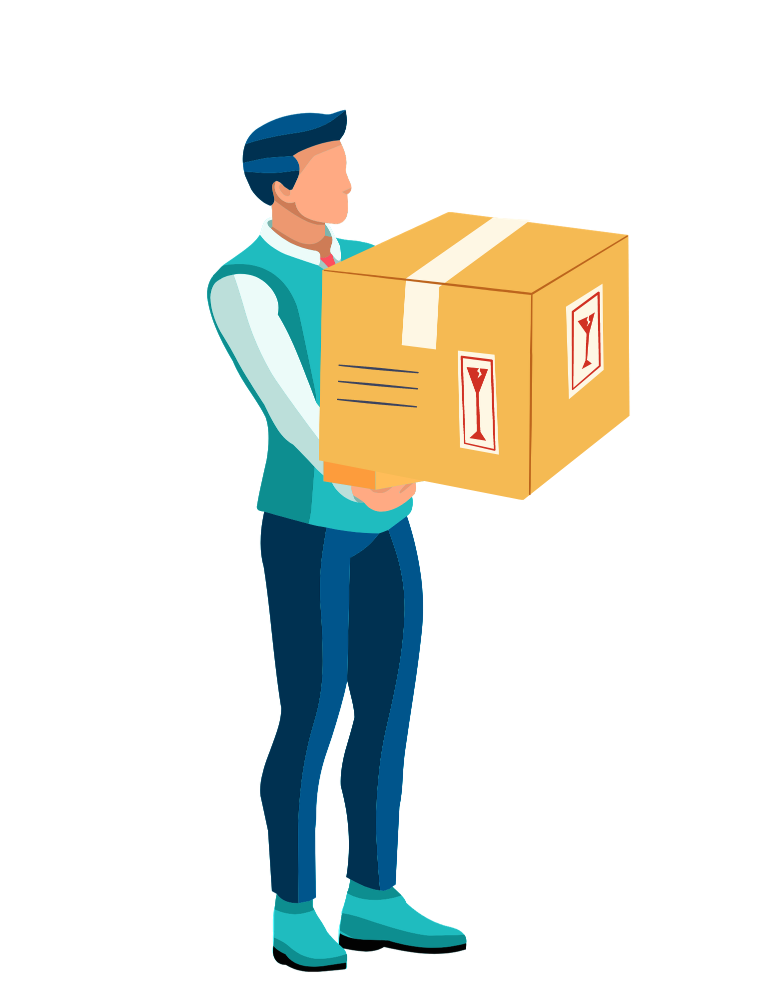
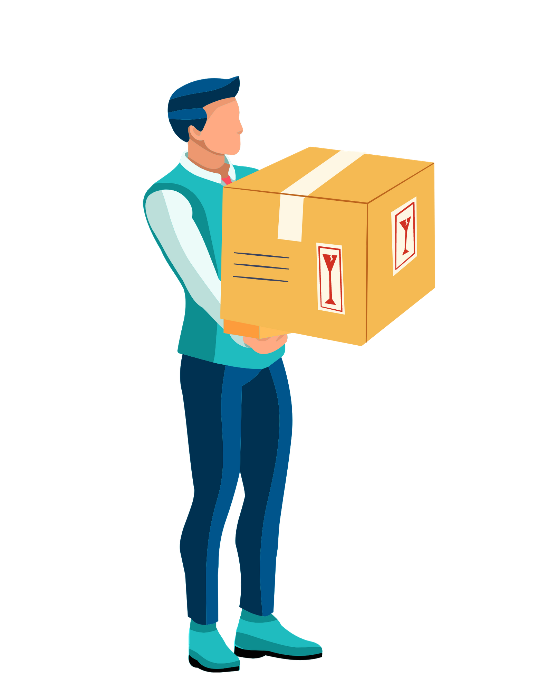

Step Execution
1. Take an empty tank and fill it with water up, the height of the water level is Z1.
2. Now place the floating body having weight W in the tank,the water level rises upto Z2.
3. Adjust the floating ship.
4. After adjusting, add load of weight (w) to the horizontal beam of the floating body at centre of the beam.
5. Now displaced the load at a known distance Y from the centre of the beam.
6. Now the floating body will tilt at some angle on one side and observe the tilt angle.
7. Finally, calculate the metacentric height using the given formula.
Metacentric Height(GM) = (w*Y)/((W+w)*tan(θ)
where,
Weight of floating body = W
Additional weight added on the horizontal beam of the floating body = w
The distance of w from the center = Y
Tilt angle = θ
Weight of floating body = W
Additional weight added on the horizontal beam of the floating body = w
The distance of w from the center = Y
Tilt angle = θ
Now you are able to answer the following Question :
 
